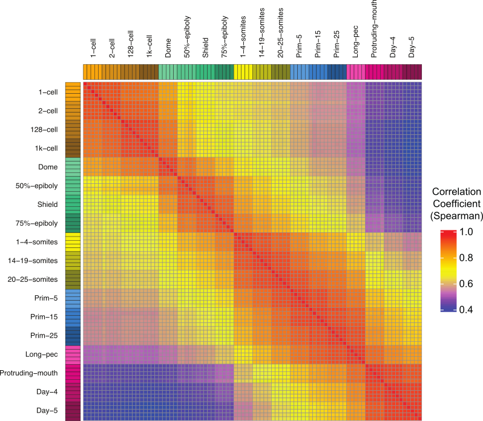
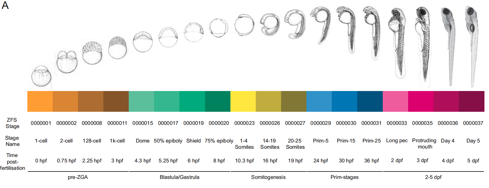
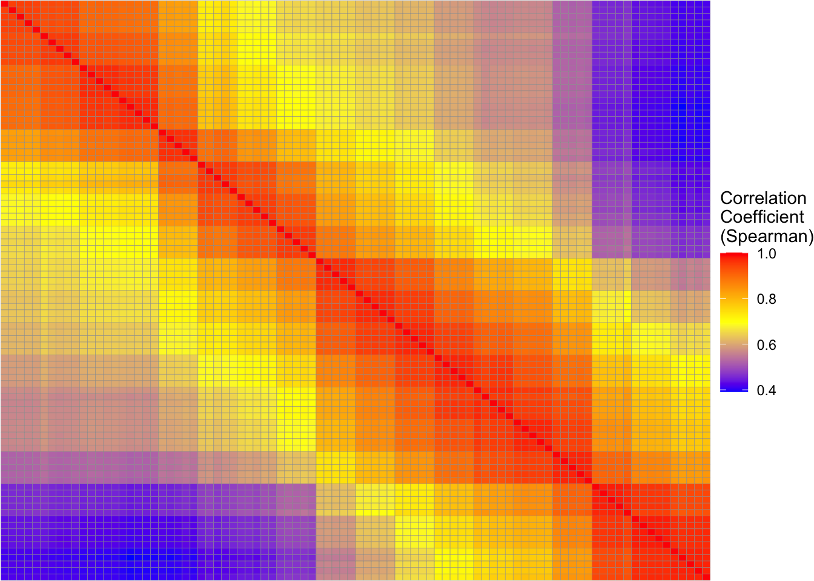
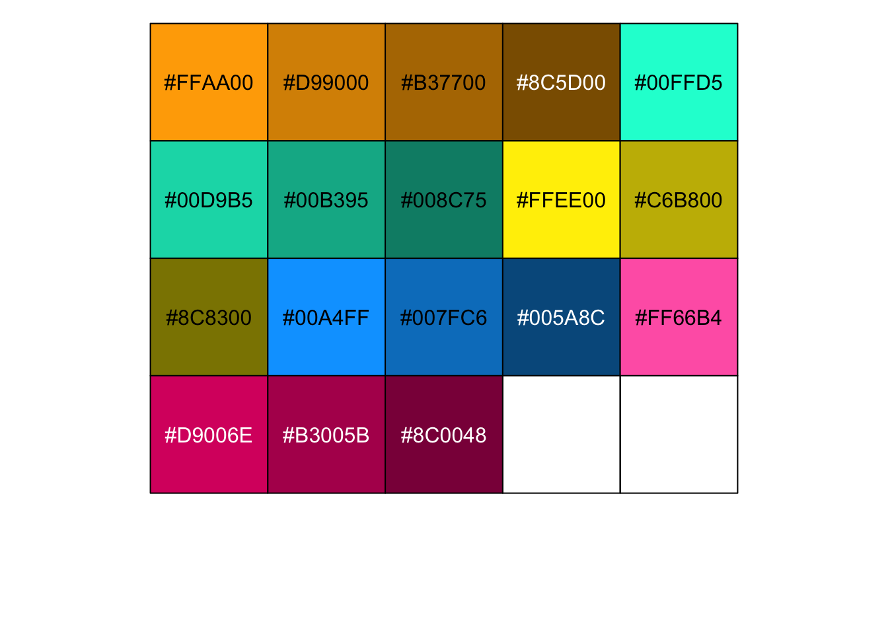
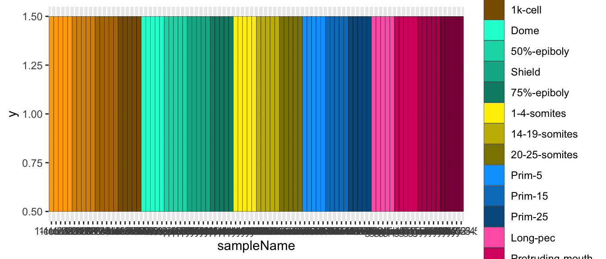
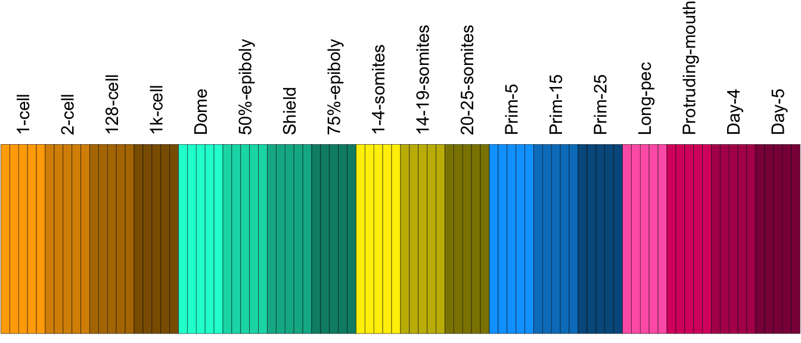
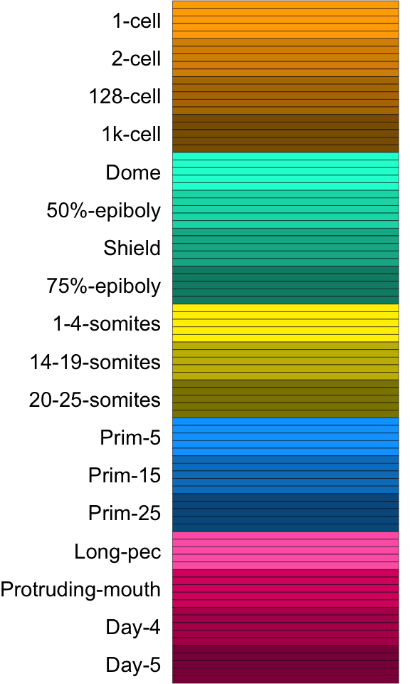
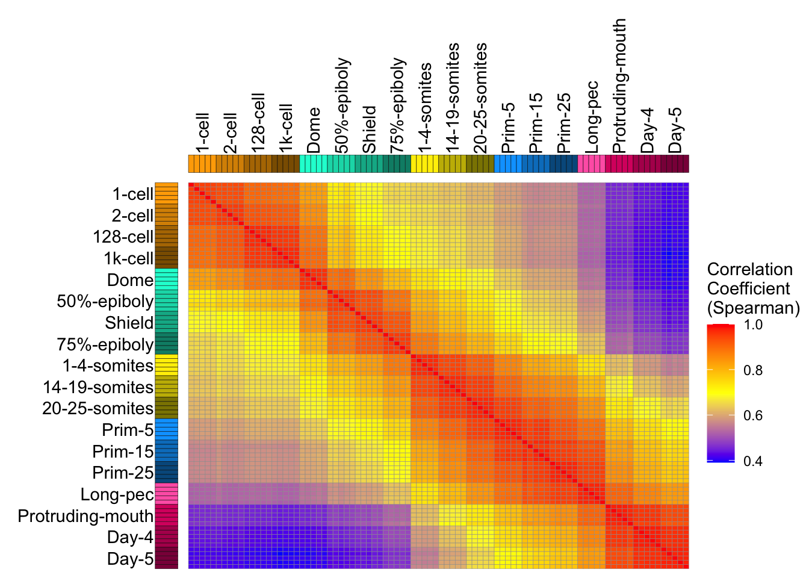
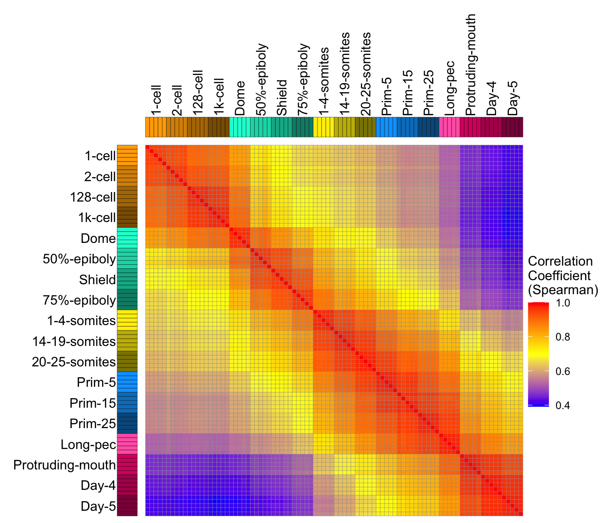
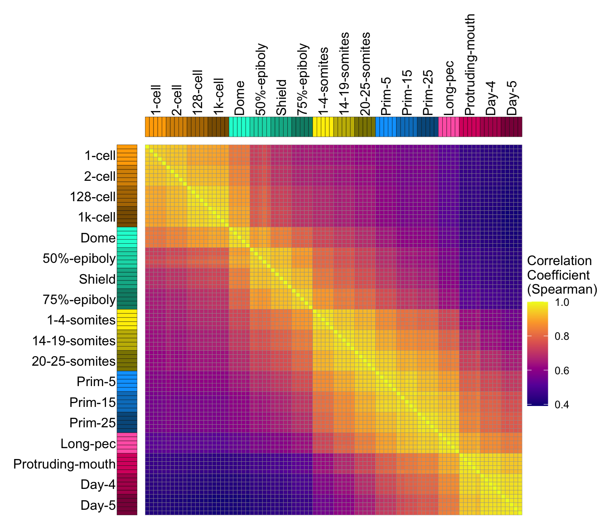

tpm_file <- "zfs-devstages-tpm.tsv"
if (!file.exists(tpm_file)) {
tpm_url <- "https://figshare.com/ndownloader/files/54600980"
download.file(tpm_url, tpm_file)
}
library(tidyverse)
tpm_data <- read_tsv(tpm_file, show_col_types = FALSE) |>
dplyr::rename(GeneID = e85.Ensembl.Gene.ID)
This plot appeared in Figure 1 of A high-resolution mRNA expression time course of embryonic development in zebrafish The code that was originally used to create it can be found in the github repository for the paper. I have updated the code to take advantage of newer packages and functions.
The plot shows the correlation in gene expression values between different zebrafish samples in a developmental time course. To understand how the levels of genes change over embryonic development, we collected zebrafish samples at different time points during embryogenesis. We collected 5 samples at 18 time points, producing 90 samples overall.

Then we sequenced the RNA of the samples. The sequenced fragments are mapped to the reference genome and fragments that map to genes are added up to provide a count of gene expression for each gene. The counts were converted to Transcripts per Million (TPM) The data can be downloaded from eLife or Figshare
The data looks like this:
library(knitr)
kable(tpm_data[1:5, 1:13])| GeneID | Chr | Start | End | Strand | Gene.type | Gene.name | Gene.description | 1-cell-1 | 1-cell-2 | 1-cell-3 | 1-cell-4 | 1-cell-5 |
|---|---|---|---|---|---|---|---|---|---|---|---|---|
| ENSDARG00000099104 | 1 | 6408 | 12027 | -1 | protein_coding | rpl24 | ribosomal protein L24 [Source:ZFIN;Acc:ZDB-GENE-020419-25] | 241.2037800 | 232.2064337 | 211.203960 | 217.745711 | 248.12113 |
| ENSDARG00000102407 | 1 | 11822 | 16373 | 1 | protein_coding | cep97 | centrosomal protein 97 [Source:ZFIN;Acc:ZDB-GENE-031030-11] | 172.8556367 | 165.0511858 | 161.670783 | 139.564731 | 125.31794 |
| ENSDARG00000102097 | 1 | 18716 | 23389 | 1 | protein_coding | nfkbiz | nuclear factor of kappa light polypeptide gene enhancer in B-cells inhibitor, zeta [Source:ZFIN;Acc:ZDB-GENE-071024-1] | 5.8870169 | 7.0719760 | 7.975454 | 7.636275 | 6.87339 |
| ENSDARG00000099640 | 1 | 27690 | 34330 | 1 | protein_coding | eed | embryonic ectoderm development [Source:ZFIN;Acc:ZDB-GENE-050417-287] | 217.9414787 | 222.2055979 | 209.671435 | 198.834633 | 173.53600 |
| ENSDARG00000104071 | 1 | 36552 | 39191 | 1 | protein_coding | HIKESHI | zgc:110091 [Source:ZFIN;Acc:ZDB-GENE-050417-34] | 0.9315895 | 0.7248571 | 1.004052 | 2.290409 | 0.00000 |
The first 8 columns are information about each gene. The remaining columns are TPM values for each sample.
We also need sample information, which is present in the Github repo.
sample_file <- "zfs-rnaseq-sampleInfo.tsv"
if (!file.exists(sample_file)) {
sample_url <- "https://raw.githubusercontent.com/richysix/zfs-devstages/refs/heads/master/dataFiles/rnaseq/zfs-rnaseq-sampleInfo.tsv"
download.file(sample_url, sample_file)
}
samples <- read_tsv(sample_file, show_col_types = FALSE) |>
# set levels of sampleName
dplyr::mutate(
stageName = fct_inorder(stageName),
sampleName = fct_inorder(sampleName)
)The correlation heatmap itself is straight forward. I subset the data to just the TPM columns and use the cor function to calculate the Spearman1 correlation coefficient between the columns (samples) of the TPM matrix.
The only slight change is because the axes start at 0 in the bottom left but because of how we want the matix arranged, we need to reverse the order of the y-axis variable (sample_name_2).
sample_cor_spearman <- tpm_data |>
# remove metadata columns
dplyr::select(-c(GeneID:Gene.description)) |>
as.matrix() |>
# create the sample correlation matrix
cor(method = "spearman")
sample_cor_spearman_heatmap <-
sample_cor_spearman |>
# create tibble, make rownames a column
as_tibble(rownames = "sample_name_1") |>
# pivot longer
tidyr::pivot_longer(cols = -sample_name_1, names_to = "sample_name_2") |>
# set levels of sample names
dplyr::mutate(
sample_name_1 = factor(sample_name_1, levels = samples$sampleName),
sample_name_2 = factor(sample_name_2, levels = rev(samples$sampleName))
) |>
ggplot() +
geom_tile(aes(x = sample_name_1, y = sample_name_2, fill = value), colour = "grey60") +
scale_fill_gradientn(colours = c("blue", "yellow", "red"),
guide = guide_colorbar(title = "Correlation\nCoefficient\n(Spearman)") ) +
theme_void() +
theme(legend.position="right", legend.title = element_text(colour="black"))
print(sample_cor_spearman_heatmap)
Now to finish the figure, we need to create the coloured sample strips that represent individual samples. We wanted a way to identify each stage, but because there are 18 different stages, choosing different colours that can be easily distinguished is essentially impossible. So I divided the stages into groups and picked a hue for each group. Then I altered the saturation of the colours to create a gradient in each group.
# get hues from colour blind palette
col_hsv <- biovisr::cbf_palette(named = TRUE)[
c("orange", "blue_green", "yellow", "blue", "purple")] |>
col2rgb() |>
rgb2hsv()
colour_palette <-
hsv(
# there's 3 values in groups 3 and 4. This removes one value from each
h = rep(col_hsv["h",], each = 4)[c(-9,-13)],
s = c(rep(1, 14), 0.6, rep(1,3)),
# provide a range for value
v = c(seq(1,0.55,-0.15),
seq(1,0.55,-0.15),
seq(1,0.55,-0.225),
seq(1,0.55,-0.225),
seq(1,0.55,-0.15)
)
)
names(colour_palette) <- levels(samples$stageName)
scales::show_col(colour_palette)
The sample strip is a heatmap (geom_tile) using the samples data frame as the input data. The x-axis is defined by the sample names making one cell for each sample. The fill colours are determined by the stageName factor.
sample_strip_horiz <-
ggplot(data=samples, aes(x=sampleName, y=1, fill=stageName)) +
geom_tile(colour = "black") +
scale_fill_manual(values = colour_palette)
print(sample_strip_horiz)
The labels are done by setting breaks in scale_x_discrete. samples$sampleName[seq(3,90,5)] picks the middle sample from each group to position the label. The labels are defined by the levels of the stageName variable. The labels are moved to the top by setting position = "top" in scale_x_discrete. theme_void() removes the space caused by axis expansion and axis titles, ticks and labels. Then the stage labels are returned and rotated by theme(axis.text.x.top = element_text(angle = 90, colour = "black", hjust = 0))
sample_strip_horiz <-
ggplot(data=samples, aes(x=sampleName, y=1, fill=stageName)) +
geom_tile(colour = "black") +
scale_fill_manual(values = colour_palette) +
scale_x_discrete(
position = "top",
breaks = samples$sampleName[seq(3,90,5)],
labels = levels(samples$stageName)
) +
guides(fill = "none") +
theme_void() +
theme(axis.text.x.top = element_text(angle = 90, colour = "black", hjust = 0))
print(sample_strip_horiz)
The vertical sample strip is essentially the same as the horizontal one, except were reorder the sampleName variable so that it matches the order of the matrix.
# rearrange sample levels
set_breaks <- function(x) {
return(x[seq(3,90,5)])
}
stage_for_sample <- samples$stageName |>
as.character() |>
magrittr::set_names(samples$sampleName)
sample_strip_vert <- samples |>
dplyr::mutate(
sampleName = factor(sampleName, levels = rev(levels(sampleName))),
stageName = factor(stageName, levels = rev(levels(stageName)))
) |>
ggplot(aes(x = 1, y = sampleName, fill=stageName)) +
geom_tile(colour = "black") +
scale_fill_manual(values = colour_palette) +
scale_y_discrete(
breaks = set_breaks,
labels = stage_for_sample
) +
guides(fill = "none") +
theme_void() +
theme(axis.text.y = element_text(colour = "black", hjust = 1))
print(sample_strip_vert)
To put it all together, I originally used Adobe Illustrator. However, now to put it all together, I can use the patchwork package.
library(patchwork)
plot_spacer() +
sample_strip_horiz +
sample_strip_vert +
sample_cor_spearman_heatmap +
plot_layout(ncol = 2, byrow = TRUE, widths = c(1,20), heights = c(1,20),
guides = "collect")
One final thing that needs tweaking is size of the image to make sure the matrix portion of the plot is square. You could do a process of trial and error to make it work but an easier wasy to do this, is to removed the legend from the plot with theme(legend.position = "none") and the use the get_legend function from the ggpubr package to extract the legend from the original plot as a separate ggplot object. Then, I made the final figure 7 inches wide and 6 inches high to provide extra space for the legend and scaled the widths and heights in plot_layout accordingly.
sample_cor_spearman_heatmap_no_legend <-
sample_cor_spearman_heatmap + theme(legend.position = "none")
heatmap_legend <- ggpubr::get_legend(sample_cor_spearman_heatmap) |>
ggpubr::as_ggplot()
plot_spacer() + sample_strip_horiz + plot_spacer() +
sample_strip_vert + sample_cor_spearman_heatmap_no_legend + heatmap_legend +
plot_layout(nrow = 2, ncol = 3, byrow = TRUE, widths = c(1,17,3),
heights = c(1,17), guides = "collect")
I made this figure 9 years ago. If I was making it today, I would use a different colour scheme. That’s because this colour scheme is not perceptually uniform. So, these days I would use the viridis colour map, which is included in ggplot2. We just use scale_fill_viridis_c For an introduction to viridis watch this video.
sample_cor_spearman_heatmap_viridis <-
sample_cor_spearman |>
# create tibble, make rownames a column
as_tibble(rownames = "sample_name_1") |>
# pivot longer
tidyr::pivot_longer(cols = -sample_name_1, names_to = "sample_name_2") |>
# set levels of sample names
dplyr::mutate(
sample_name_1 = factor(sample_name_1, levels = samples$sampleName),
sample_name_2 = factor(sample_name_2, levels = rev(samples$sampleName))
) |>
ggplot() +
geom_tile(aes(x = sample_name_1, y = sample_name_2, fill = value), colour = "grey60") +
scale_fill_viridis_c(guide = guide_colorbar(title = "Correlation\nCoefficient\n(Spearman)"),
option = "plasma") +
theme_void() +
theme(legend.position="right", legend.title = element_text(colour="black"))
sample_cor_spearman_heatmap_viridis_no_legend <-
sample_cor_spearman_heatmap_viridis + theme(legend.position = "none")
heatmap_legend_viridis <- ggpubr::get_legend(sample_cor_spearman_heatmap_viridis) |>
ggpubr::as_ggplot()
plot_spacer() + sample_strip_horiz + plot_spacer() +
sample_strip_vert + sample_cor_spearman_heatmap_viridis_no_legend + heatmap_legend_viridis +
plot_layout(nrow = 2, ncol = 3, byrow = TRUE, widths = c(1,17,3),
heights = c(1,17), guides = "collect")
Footnotes
I used Spearman, because it is less sensitive to outliers. I originally used “Pearson” and the reviewers of the paper noticed that some of the later samples appeared to correlate better with very early stages than with the immediately prior stages. This was because some genes (e.g. ribosomal genes) are very highly expressed at some stages and the large values skew the Pearson coefficient to produce spuriously high correlation values in some cases. If you remove
method = "spearman"from the code and run it, you can see for yourself. Check out the top right of the matrix.↩︎